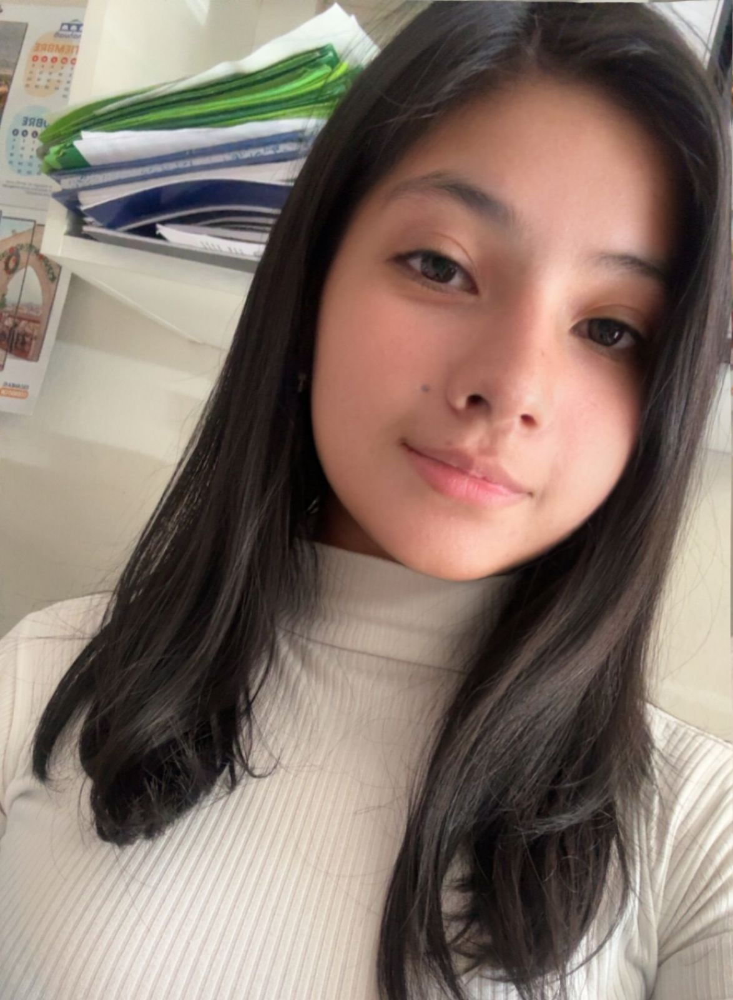
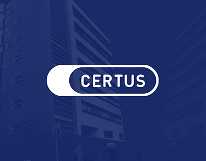
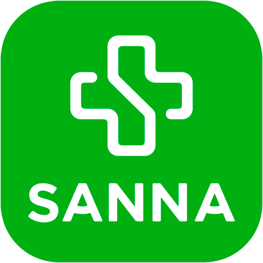
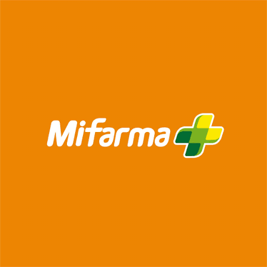

Mi nombre es Yadira Alvarez, actualmente soy estudiante del Instituto CERTUS. Anteriormente estudié Farmacia y Bioquímica.
Edad: 21 años
Ciudad: Arequipa
Carrera: Diseño y desarrollo de Software
Lugar de procedencia: Arequipa, Perú
| Nivel educativo | Institución | Año | Estado |
| Primaria | I.E Colegio Faraday | 2013 | Culminado |
| Secundaria | I.E Colegio Faraday | 2019 | Culminado |
| Nivel educativo | Institución | Año | Estado |
| Universitario | Unversidad Catolica Santa Maria | 2025 | Culminado |
- Responsabilidad
- Puntualidad
- Liderazgo
- Trabajo en Equipo
- Comunicación efectiva
- Resolución de Problemas
- Microsoft Excel - Nivel intermedio
- Microsoft Word - Nivel intermedio
- Microsoft Power Point - Basico
- MATLAB - Nivel intermedio
¿Quién eres?
Soy Yadira Alvarez, una estudiante responsable, dedicada y con deseos de seguir aprendiendo y desarrollándome profesionalmente.
¿Qué estudias?
Estudio Farmacia y Bioquímica en el Instituto CERTUS.
¿Cuáles son tus intereses?
Me interesa aprender sobre medicamentos, salud, tecnología y adquirir nuevos conocimientos.
¿Cuáles son tus fortalezas?
Mis fortalezas son la responsabilidad, puntualidad, comunicación efectiva, trabajo en equipo y resolución de problemas.
¿Qué conocimientos posees?
Poseo conocimientos básicos de computación, Microsoft Excel, atención al cliente y temas relacionados con farmacia y tegnologia.
¿Cuáles son tus objetivos profesionales?
Mi objetivo es desarrollar mis habilidades y adquirir experiencia para crecer profesionalmente en el área de farmacia.
¿Qué esperas lograr en el futuro?
Seguir aprendiendo y lograr desempeñarme de manera exitosa en mi profesión.
| Instituto CERTUS | Clínica Arequipa Sanna | Farmacia Mifarma |
 |
 |
 |
Estudiante de primer ciclo de la carrera de Diseño y Desarrollo de Software. |
Función de trabajo en el Área de Análisis Clínicos en el Laboratorio Bioquímico, realizando recolección de muestras. |
Función de trabajo en el Área de Inventario y almacenamiento de medicamentos. |